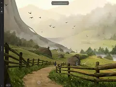

The Greenhouse at Ballywobble
An ordinary village does something rather extraordinary.

Prologue
Trending
At 6:14 on a Tuesday evening, a man in a very shiny tie told four hundred thousand people that a village in West Cork had gone Communist.
He was sitting behind a desk designed to look expensive without actually being useful. Behind him was a large screen displaying a photograph of a greenhouse, a red arrow and the words COMMUNIST TAKEOVER?
"A so-called collective," he said, in the voice normally reserved for words like cult and rhubarb, "is operating in Ballywobble. No money. No private property. Sources say residents are being forced to share lettuce."
This was not true.
It was, however, the sort of untrue that travels at the speed of light, while the truth is still looking for its coat.
By seven o'clock it was on Facebook. By eight it was on Reddit, in a thread titled "Is this the start of the Great Ballywobble Gulag?"
The top comment came from a user called FreedomEagle1776, who had never been to Ballywobble but was certain he knew what was happening there.
The second came from comrade_kettle.
"Finally," he wrote.
He had also never been to Ballywobble.
By nine, the Regional Savings & Trust Bank had received an email from its compliance department. By Thursday morning, Mr. Reginald Pennyfeather, Risk Assessment Officer, was standing in a muddy lane with a clipboard, a briefcase, a printout of the Reddit thread and a deeply held belief that every community has a Person Who Decides, hidden behind a desk somewhere.
Finding the desk, he believed, was merely a matter of patience.
He had been sent because the bank held the account of a small cooperative called Ballywobble Odd Jobs.
The account had been completely ordinary for over two years now.
That was what worried him.
Chapter One
The Lettuce
The trouble had started with a lettuce.
Not a particularly interesting lettuce, as lettuces go. It was the sort that comes sealed in plastic, having travelled further than most of the village's residents, and costs two euros forty despite tasting faintly of damp paper.
Mabel Brennan had been holding it at arm's length in Mr McKenna's shop for long enough that he had begun to wonder whether she was waiting for it to apologise. The shop smelled of turf smoke, floor polish, and the faint, sweet rot of apples going soft in a crate by the door.
"Two euros forty," she said.
Mr McKenna looked over his glasses.
"Everything's gone up, Mabel."
"Well, it hasn't got any better, has it?"
Mr McKenna considered this. He had been running the shop for thirty-seven years and had learned that arguing with Mabel was a poor investment of time. He also knew that she would probably buy something else, even if only to avoid giving him the satisfaction of thinking he had driven her out.
"That's the price."
Mabel turned the packet over. There was a small label explaining that the lettuce had been washed, selected and packed with care. It had not, apparently, been grown with any particular care for the distance it had travelled.
"Where's it from?"
"The wholesaler."
"And where did they get it?"
"Mabel, I sell it. I don't interview it."
She put it back.
She was seventy-one, a widow, and had lived in Ballywobble all her life. The name itself was a mistake. An English surveyor in 1841 had been told the place was called Baile an Uabhail—the town of the bend in the river. Suffering from a heavy cold and a complete lack of interest in pronunciation, he had written down "Ballywobble" on the map. By the time anyone in Dublin noticed, the locals had decided they quite liked it.
The village itself was a huddle of houses clinging to the side of a valley, painted in faded pastels—pink, yellow, blue—that looked cheerful in the summer and slightly desperate in the winter. The river ran through the middle, brown and fast, carrying the smell of wet earth and distant peat bogs. Beyond the houses, the fields rose steeply, divided by dark hedgerows and stone walls, disappearing into a permanent, low-hanging mist.
It was a place where everyone knew everyone, and where the arrival of a new car was a topic of conversation for three days. The insularity was not hostile; it was just a fact of geography. The village looked after its own, but the definition of "its own" was narrow.
She had seen the biscuit factory open, employ half the village and close again. She had seen the bus service reduced, the school threatened with closure and the village hall roof repaired so many times that it was now largely made of optimism.
She was not, by nature, an activist. She disliked meetings, distrusted people who used the word stakeholders and had never knowingly signed a petition.
She was, however, extremely difficult to stop once she had decided something was daft.
She walked out of the shop and down the street to The Prassa—the café run by Ines's parents. The sign above the door said A Praça, but the village had decided otherwise years ago, and the family had long since stopped correcting them. Inside, the smell was a sharp, welcome contrast to the damp street: roasting coffee, warm bread, and a faint undertone of garlic and paprika from the kitchen. The tables were mismatched, the chairs didn't quite go together, and there was always a newspaper someone had left behind and a dog asleep under the window seat. It was the kind of place that didn't look like much from the outside and didn't try very hard on the inside, and yet the coffee was better than anything in the town and the food was honest and filling and priced as though the family had never quite got around to raising it.
Mabel had known Ines since the girl was small enough to be stood on a stool behind the counter, handed a cloth, and told to wipe. Mabel had been coming to The Prassa for twenty years—first with her husband, then without him—and over the last year or so she had fallen into the habit of sitting with Ines for a few minutes on her walk home. At first it had been politeness. Then it had become something closer to a standing arrangement.
"I could grow better in a bucket," Mabel announced, sitting down opposite her.
Ines looked up. "Then do."
She had been hearing it for months. Mabel would come in, sit down, and deliver her verdict on whatever had annoyed her that morning—the price of bread, the state of the potatoes, the fact that the apples in McKenna's shop had come from three countries and none of them were Ireland. The food wasn't what it was, she said. The soil was tired, the vegetables were watery, and nobody seemed to care where anything came from anymore. Some of it was nostalgia, Ines knew. But some of it wasn't.
What Ines liked—what had made her start looking up from her phone when Mabel came in—was that the complaints were never just complaints. Mabel was angry about the right things. She was angry about the distance the lettuce had travelled and the plastic it came wrapped in and the fact that the village had once fed itself and now couldn't. Ines had spent two years studying environmental science and had heard a great many people say that they cared about the planet. Most of them said it softly, and then bought the cheap lettuce anyway. Mabel did not say it softly. Mabel said it in the middle of a café, at full volume, and then refused to buy the lettuce.
Ines found this refreshing. She had not yet worked out how to tell her that.
"Is that right?" Mabel asked.
"Yes. Lettuce is easy. You don't need much space."
"Well, I haven't got a bucket."
"I've got one."
"What's wrong with it?"
"Nothing."
"Then why aren't you using it?"
Ines smiled. "I was going to."
"Well, now you're going to do it with me."
Mabel did not, on the whole, ask people for things. She had spent most of her life managing without assistance and had a deep suspicion of anyone who offered it too readily. But she had been watching Ines write things in a notebook for months now—measurements, dates, things that had worked and things that hadn't—and she had decided, without saying so, that the girl might actually know what she was talking about.
Ines, for her part, had noticed Mabel's visits growing more regular. She had also noticed that Mabel never asked a question she didn't already have an opinion about. What she hadn't yet worked out was whether that made her difficult or reliable.
She was beginning to suspect it was both.
Ines was eighteen, studying environmental science at college in the nearest town, and possessed of the irritating confidence of someone who had discovered that most things are possible if you look them up. Her parents had moved from Portugal in the nineties, opened the café, and quietly become part of the furniture. Ines had grown up translating between Portuguese at the kitchen table and broad West Cork accents at the counter.
The bucket went into Mabel's back yard, a small, walled space that smelled of wet stone and cat. Ines drilled holes in the bottom, added gravel and compost, and explained drainage. Mabel supplied the compost, a trowel and several opinions about the correct depth of a hole.
They planted the first seeds on a Wednesday.
By the following week, Mabel had watered them twice as often as Ines recommended. Mabel said that if plants couldn't cope with a bit of water they had no business being plants.
The bucket produced three lettuces.
Two were eaten by slugs.
Ines regarded this as a learning opportunity. She made a note of the date, the weather, the watering and the damage.
Mabel regarded it as an insult.
"You can learn all you like," she said, inspecting the remains. "I'd rather have had the lettuce."
But she did not throw the notebook away. She asked Ines what she had written, and whether they could try something different next time.
They needed more space. Which meant they needed timber. Which meant they needed to build something, and neither of them knew how.
Mabel found Sam Watts three days later, on her walk home from the café.
He was standing in his yard, swearing at a shed.
Sam was a mechanic. He had grown up on a large farm outside the village. His older brother, Michael, had inherited the land. Sam had inherited the farmyard, the outbuildings, and a deep, abiding sense of having been slightly short-changed.
He was forty-two, with three children and a wife who managed the accounts. He was good at his work. He was less good at charging people enough for it.
At the moment, he was trying to clear out the old shed to make room for a trampoline. His wife had decided the children needed one. Sam had decided he needed a stiff drink. The shed smelled of old engine oil, rust, and the sharp, dusty scent of chicken feed.
It was full of old timber, broken machinery, and forty years of farm clutter. Sam was dragging out a stack of warped planks and throwing them onto a bonfire pile.
"You're not burning those?" Mabel asked, stopping at the gate.
Sam turned. "I am."
"They'd make raised beds."
He stared at her. "For what?"
"Lettuce."
Sam looked at the planks. He looked at Mabel. He sighed.
"Take them," he said. "Don't bring them back."
Mabel did not ask him to help. She did not invite him to anything. She simply took the planks, and said she'd send someone round for them, and went on her way.
That should have been the end of it.
But the following Saturday, Sam's wife told him to get out of the house.
She said it kindly, which was worse. She said the children were driving her demented and he was driving her demented and the two things together were more than any woman should have to bear. She said he should go and do something useful. She suggested he take the planks round to Mabel's himself, since he was the one who'd given them away.
Sam said he'd do it on Monday.
His wife said he'd do it now.
So he loaded the planks into the van and drove to Mabel's, and he told himself he was only there to drop off the timber, and he stood at the edge of the yard with his hands in his pockets, watching Ines explain soil acidity to a deeply unimpressed Mabel, and he said, before he could stop himself, "That soil's too wet."
Ines looked up. "It's West Cork. All soil is too wet."
"You need to raise the bed. Let the water drain."
He walked over and picked up one of the planks he had given them. He looked at it, then at the yard, then at the women.
"I suppose I could give you a hand," he said. "For an hour. But I'm not joining anything."
Hob arrived an hour later, because Mabel had called him about the toaster.
She had called him on the Thursday, when the toaster had stopped working, and he had said he'd come round on Saturday. He arrived at two o'clock with the toaster under one arm and his toolbox in the other hand. He found Mabel, Ines, and Sam standing around a pile of timber, arguing about drainage. The air smelled of fresh sawdust, damp earth, and the sharp tang of Sam's roll-up cigarettes.
"You said the toaster was broken," Hob said, hovering at the edge of the group.
"It is," Mabel said. "But we've got a bigger problem now."
Hob looked at the timber. He looked at the bucket with its two surviving lettuces. He looked at Sam, who was holding a plank and looking miserable.
"Right," he said. "Where do you want me?"
He fixed the toaster in ten minutes. Then he helped Sam lift the planks. Then he stayed for tea, because he had nowhere else to be, and because Mabel made a decent cup.
They sat in the kitchen until it got dark. Sam complained about the price of diesel. Hob said nothing. Ines wrote things down in her notebook. Mabel listened.
At some point, the talk turned to how things used to be.
It was Hob who started it, which surprised everyone. He said that when he was a boy, there had been a man in the village called Christie who fixed bicycles from a shed behind his house. Christie didn't charge. People brought him things—a bag of potatoes, a few eggs, a bit of turf—and if they had nothing to bring, he fixed the bicycle anyway. Hob said he had spent half his childhood in that shed, watching, and that Christie had taught him more about how things worked than the biscuit factory ever did.
"There was a woman up the hill who did the same with sewing," Mabel said. "You'd bring her a coat to mend and she'd tell you to bring her a bit of bread next time you were passing. It wasn't a transaction. It was just how it was done."
"It's not how it's done now," Sam said.
"No," said Mabel. "Now you go to the shop and you pay for the coat to be mended, and the woman who mends it pays tax on the money, and everyone's a bit worse off and nobody's had a conversation."
There was a pause.
"I'd nearly forgotten," Hob said, quietly. "I hadn't thought about Christie in years."
Mabel looked at him.
"That's the trouble," she said. "We forget. And then it feels like it was never like that at all."
When they left, Ines stayed behind to help wash the mugs.
"That was a good afternoon," she said. "It felt like—" she stopped, not quite sure how to say it. "It felt like a village."
Mabel dried a mug.
"It was one afternoon," she said. "Sam came because his wife made him. Hob came because I broke the toaster. Neither of them came because they wanted to be here. If we want more afternoons like this, we'll have to give them a reason."
Ines opened her notebook. On the page, she had drawn a simple grid. Across the top were names. Down the side were things like Time, Materials, Jobs.
"What's that?" Mabel asked.
"It's like a credit union," Ines said. "But for time. If someone gives an hour of their time to fix a toaster, they get an hour of credit. If they need a lift to the hospital, they can spend it."
Mabel looked at her. "Like a barter system?"
"Not exactly. More like..." Ines paused. She knew better than to say a resource-based economy. "It's like tracking what we already do for each other, so nobody feels taken advantage of."
Mabel thought about it. She thought about the time she had spent driving the neighbour's kids to school when their car broke down. She thought about the time Sam had fixed her gutters for free because she'd fed his dogs when he was in hospital. She thought about Christie's shed, and the woman up the hill with the sewing.
"Write it down," Mabel said. "Not as money. As thanks, with arithmetic."
Ines wrote it down. She put Sam's name at the top of one column, because he had helped with the beds, and she put one hour beside it, because that was how long he had stayed. She put Hob's name below it, with ten minutes beside it, because that was how long the toaster had taken.
She did not know, then, that this would be the first entry in the Ledger, and that Hob would spend the next two years refusing to look at it.
The second repair evening had five people. The third had nine.
People brought broken toasters, lawnmowers, bicycles and an alarming number of lamps. One woman brought a radio that had belonged to her father. Another brought a clock that had stopped at twenty past four and seemed to have been waiting for someone to notice.
Piotr arrived on the fourth week.
He had heard about the repair evenings from a man at the builders' merchant in Bandon, who had heard about them from his sister, who lived in the next valley. He brought a broken lawnmower. But when he saw Sam struggling to level the ground for the raised beds, he put the mower down and picked up a shovel.
"You need to dig out the topsoil first," he said. "Then put the timber down. Then put the soil back."
Sam looked at him. "And who made you the foreman?"
Piotr shrugged. "I'm a builder. It's what I do."
He was right. The beds went in perfectly. He didn't ask for anything in return, just a cup of tea and a bit of chat. He became a fixture at the repair evenings, quietly fixing things, quietly helping.
Aoife arrived the following week with a broken hairdryer and a business card.
She was thirty-four, had grown up in the village, and had spent two years in Cork doing a marketing diploma before coming home to work in her uncle's insurance office. She had never used the diploma for anything. She had, in fact, spent most of the last decade pretending she hadn't done it, because it was the sort of thing people made jokes about.
She stood at the edge of the shed for a while, watching Hob take the hairdryer apart, and then she said, to nobody in particular, "You know nobody knows about this."
Sam looked up. "What?"
"This. The Shed. The repair evenings. I only heard about it because my mother mentioned it, and she only heard about it because she was talking to Mrs Kavanagh at Mass. If I hadn't been at Mass, I wouldn't know."
"So?"
"So how is anyone else supposed to find out?"
There was a pause.
"I could do a notice," Aoife said. "For McKenna's window. And the church porch. And maybe one for the school."
"A notice," said Sam.
"A flyer. With the times on it. And what we do. And who to contact."
"We haven't got a who to contact."
"You've got Mabel."
Sam considered this.
"That's true."
Aoife made the flyer that weekend. It was a single sheet of A5, printed at her uncle's office, with the words THE SHED at the top in a font she had chosen carefully, a short list of what could be repaired, the time and place of the repair evenings, and a line at the bottom that said All welcome. No charge. Bring something broken or just bring yourself.
She put one in McKenna's window, one in the church porch, one on the noticeboard outside the school, and one—after some hesitation—on the online forum for the parish, which was mostly used for lost dogs and complaints about the bins.
Within a week, four new people had turned up at the Shed.
Within a month, there were eleven.
Aoife came back the following week with another idea. And another the week after that. She never joined the Rota. She never signed the Ledger. But she kept making flyers, and she kept putting them up, and she kept finding new places to put them.
She told everyone it was just something to do.
Tunde arrived two months later, on a wet Tuesday in November.
He was a nurse at the community hospital in the next town. He had heard about the Shed from a patient—an old woman who had brought her radio in to be fixed and had spent the entire appointment talking about the man called Hob who had fixed it. But he had also seen the flyer. It had been pinned to the noticeboard in the hospital staff room, and he had read it three times before he realised what it was.
He brought a broken fan that had given up during the summer heatwave and had been sitting in his garage ever since.
He was polite, softly spoken, and spent most of the evening watching Hob take the fan apart.
When Hob got stuck on a tricky wire, Tunde pointed at it. "That one's burnt out. You need to splice it."
Hob looked at him. "You know electronics?"
"A bit. My father was an electrician."
They worked on the fan together. Tunde came back the next week. And the week after. He started bringing a flask of tea and a packet of biscuits. He didn't talk much, but he was there.
The group needed a name. They had been meeting in Sam's shed, so they called it "The Shed." It was as simple as that. It was a place, and a group, and a set of tools, all at once.
But not everyone was happy about it. Gerard O'Callaghan, who lived just up the road, had been watching the comings and goings with a deep and abiding suspicion.
Gerard was a retired agricultural contractor. He had spent forty years fencing, roofing, and fixing farm machinery across West Cork. He owned three sheds. Not the kind of sheds you put a lawnmower in. The kind of sheds that were full of forty years of "stuff that might be useful someday."
He had old nails in jars. He had timber offcuts stacked to the roof. He had tractor parts that hadn't been made since 1982. He had a truly terrifying amount of paint.
Gerard hoarded because he had grown up in a time when you couldn't just go to a shop and buy a bolt. You had to wait two weeks for the wholesaler, or you made do. He believed the modern world was fragile. If things went wrong, you needed your own stash.
The noticeboard noticed.
Ballywobble Noticeboard (OFFICIAL) (NO POLITICS)
Barry G.: Anyone know why there's a van outside the Shed on a Tuesday?
Sheila P.: Repair evening! Got my toaster back, working!!
Barry G.: Is it a commune though?
Sheila P.: It's a toaster, Barry.
Barry G.: I'm just saying. There's a lot of new faces at it. The Polish fella, the black lad. It's hard to keep track. You'd want to be careful.
Mabel B.: Barry, the Polish fella fixed your lawnmower and Tunde is a nurse. Put the phone down.
Barry G.: I'm only saying what everyone's thinking.
Chapter Two
The Money
The first person to ask where the money was coming from was Mrs Kavanagh.
This was not because she was particularly interested in money. It was because she was particularly interested in knowing where it had gone.
Mrs Kavanagh was a retired accountant who still kept her household accounts in a ledger, used a calculator with a paper roll and regarded the phrase "roughly speaking" as a personal attack. Her house smelled of lavender polish and old paper, and she regarded the Shed with the same suspicion she reserved for an unbalanced spreadsheet.
She had been married to a man who had once bought a second-hand caravan without checking whether it had wheels. She had learned early that enthusiasm is no substitute for arithmetic.
The Shed was growing, and growing things required resources.
There was the land beside the river, which belonged to the council. There was glass for the greenhouse, timber, seeds, tools and the occasional quantity of tea that seemed to disappear at a rate disproportionate to the number of people involved.
The Shed could provide labour. It could repair things. It could grow food.
But it couldn't manufacture glass, pay a land lease or persuade the electricity company to accept gratitude as payment.
"We need money," said Mrs Kavanagh.
This caused a brief silence.
Nobody particularly liked the sound of it.
"Not much," she continued. "But some. And we need to keep it separate from what we're doing here."
She explained that they could register a small cooperative, which would provide ordinary services to local businesses.
They could fix the pub's cellar, repair shelving at the vet, maintain the shop's refrigeration equipment and take on other jobs that people were happy to pay for.
The money would go into an ordinary bank account.
The cooperative would pay its taxes, settle its invoices and use the remaining funds to purchase things the village couldn't provide itself.
"Money comes in at this door," she said, drawing a line on a piece of paper. "It goes out only to buy what we can't make ourselves. Credits circulate only what we produce or repair here. The moment a thing requires euros to obtain, it is not a Ledger item. It's a one-way valve."
"Why?" asked Hob.
"Because the moment you can exchange one for the other, you've created a currency. And the moment you've created a currency, somebody will eventually find a way to collect it."
Sam looked at the diagram.
"So we're a business?"
"Partly."
"And a charity?"
"No."
"Then what are we?"
Mrs Kavanagh put down her pen.
"At the moment, Robert, we're a group of people who need a greenhouse and haven't yet worked out what to call ourselves."
The arrangement worked.
Odd Jobs invoiced customers in euros. It paid its bills, paid for materials and kept the necessary accounts. Nobody was pretending the outside economy had disappeared.
Most people continued with their ordinary jobs and paid their taxes.
The difference was what happened with the things they produced together.
The greenhouse wasn't going to be owned by whoever had put the most money into it. The ladders weren't going to belong to whoever had bought them. The plans weren't going to be sold to the highest bidder.
The village was building something it could use together.
Mr Pennyfeather, when he eventually inspected the bank account two years later, found it entirely conventional.
He found this the most suspicious thing of all.
Chapter Three
People Who Weren't Convinced
Not everyone was delighted.
Mr McKenna, the shopkeeper, was initially convinced the Shed was going to destroy his business.
He had worked in the shop since he was sixteen. His father had owned it before him. He knew which customers preferred brown bread, which ones would ask for credit and which ones would return a tin of beans because the label was slightly crooked.
He was not a bad man.
He was a man with a mortgage, a wife who had recently retired and a business that had barely survived the previous three winters.
Free lettuce did not sound particularly attractive.
For a month he told anyone who would listen that free food was the thin end of a very large wedge.
Then his chiller broke.
Sam came over, spent an afternoon replacing a compressor and sent him an ordinary invoice through Odd Jobs.
It was cheaper than the commercial repair company.
The chiller worked better than it had before.
By autumn, Mr McKenna had a shelf beside the till marked LOCAL.
He insisted it had been his idea.
Mr O'Driscoll, however, was not persuaded.
He owned the hardware shop and had sold ladders, drills, spades and wheelbarrows to the village for twenty-six years. His shop smelled of sawdust, linseed oil, and old iron. It was a place where you could buy a single nail or a bag of cement, and where O'Driscoll would tell you exactly how to use both, whether you asked or not.
The Shed had started lending those very things out.
He was losing business.
He was also, although he would never admit it, frightened.
His father had built the shop from nothing. He had spent years paying off the mortgage, negotiating with suppliers and keeping the doors open through recessions and bad winters.
Now a group of people with a shed and an exercise book seemed to be telling everyone that they didn't need him.
He watched the news at night. He saw the marches in Dublin and Cork. He saw the anger on the faces of people waving flags. He didn't agree with all of it—he wasn't a thug—but he understood the fear. The village was changing. New faces, new languages, new ways of doing things. And now this Shed, with its Poles and its Nigerians and its fancy ideas about not paying for things.
One evening he confronted Sam outside the pub. The air was cold, carrying the smell of rain and stale beer.
"You're giving things away," he said.
"We're lending things."
"Same difference."
"No, it isn't."
"People need to buy things, Sam. That's how businesses work."
Sam wiped his hands on a rag.
"People need ladders. They don't necessarily need to own a ladder."
"Well, I sell ladders."
"I know."
"And what happens when your lot break one?"
"We fix it."
"And what happens when you can't?"
Sam paused.
"Then we buy one from you."
O'Driscoll looked at him.
"Very clever."
There was no answer to that.
He went home angry, and Sam went back to work.
The next morning Mabel found a letter in the Shed's postbox.
It was from a supermarket chain, concerned about the use of the words Market Garden in an online notice.
Mrs Kavanagh read it twice.
Then she took out her red pen.
She was looking forward to this.
Chapter Four
The Greenhouse

The letter from the supermarket chain had been, Mrs Kavanagh decided, a masterpiece of corporate hedging. It expressed "concern" about the use of the phrase Market Garden in an online notice, cited "brand alignment" and "territorial clarity", and suggested a "without prejudice conversation" at their earliest convenience.
She read it twice, then took out her red pen.
Her reply was three sentences long. It explained that the Shed had no interest in becoming a supermarket, that the words Market Garden had been chosen because they described a garden where things were sold at a market, and that if the chain wished to discuss territorial clarity they were welcome to visit on a Thursday, when the tea was free but the opinions were not.
She did not receive a reply. The notice remained unchanged.
By the time the Shed had thirty-one members, a small account at an ordinary bank, a larder in the old chapel and a growing collection of borrowed tools, Ines had noticed something.
The village was still losing half its winter greens to frost.
Mabel Brennan hated meetings. She had spent seventy-one years avoiding them. She had a deep and abiding suspicion of anyone who suggested "we should have a chat about this," because it usually meant two hours in a cold hall listening to someone who liked the sound of their own voice.
So when Ines suggested they needed a proper discussion about a greenhouse, Mabel refused to call it a meeting. She called it a "gathering." She put a notice in McKenna's shop saying: Gathering in the barn. Thursday. 8pm. Bring your own tea.
The barn smelled of old hay, diesel, and the faint, sour ghost of cattle that had been gone for twenty years. The roof leaked in three places. A single bulb hung from a wire, casting long, dramatic shadows.
Ines brought a diagram. It was a good diagram. It showed a greenhouse with raised beds, a rainwater collection system, and a small potting area. She had even drawn little arrows showing where the sun would come from.
She also brought a screen. It was an old tablet, propped up on a bale of hay.
Sam arrived first. He looked at the tablet suspiciously. "What's that for?"
"It's for the Board," said Ines.
"What board?"
"The digital board. For proposals and objections."
Sam looked at the tablet. He looked at the diagram. He looked at Mabel. "I thought we were just building a greenhouse."
"We are," said Mabel. "But we're doing it without anyone shouting at anyone else. Ines says the screen helps."
Hob arrived, carrying a flask of tea. He sat on an upturned bucket and said nothing.
Piotr arrived, wiping his boots on the mat. He looked at the diagram and nodded. "Good roof angle," he said. "Who designed it?"
"Ines got it," said Sam. "She's on some sort of network."
Piotr looked at Ines.
"It's a group," she said. "Online. People who build things and share the plans."
"What kind of things?"
"Greenhouses. Sheds. Water systems. Anything, really."
Piotr considered this. He looked at the diagram again.
"It's a good roof angle," he said. "Whoever designed it knew what they were doing."
Then a young lad from Skibbereen arrived.
Nobody knew who had told him about the gathering. He was nineteen or twenty, with a canvas bag over his shoulder and a notebook in his hand, and he stood at the back of the barn as if he wasn't sure he was allowed to be there.
"I heard about this," he said. "From the forum. I'm doing a course in sustainable agriculture. I wanted to see how you were doing it."
Nobody asked him to leave. Mabel looked at him for a moment, then nodded at the bale of hay beside her.
"Sit down," she said. "You can hear the argument."
He sat down. He didn't say much for the rest of the evening. But he wrote things in his notebook, and when the meeting was over, he stayed behind to help stack the chairs.
Then O'Driscoll arrived.
Nobody had invited him. He stood at the back of the barn, arms crossed, with the expression of a man who had smelled something unpleasant.
"What's this?" he asked. "A committee?"
"It's a gathering," said Mabel.
"Looks like a committee."
"It's a gathering, O'Driscoll. Sit down or leave."
He didn't sit down. He leaned against the wall and glowered.
Ines stood up. She explained the diagram. She explained the Board. She pointed to the little gauge on the screen.
"It's a thermometer," she said. "For how annoyed we are."
"How annoyed we are?" O'Driscoll repeated. "I'm already annoyed. Does that mean I win?"
"No," said Ines. "It means we keep talking."
The argument started almost immediately.
Sam wanted it by the road. "Easier to get materials in," he said. "You don't want to be dragging bags of cement across a field."
Piotr wanted it by the river. "Better drainage," he said. "More water for the plants."
O'Driscoll wanted it nowhere. "It's a waste of money," he said. "You'll spend a fortune on glass and it'll be wrecked by the first storm."
Mabel sat by the door, sipping her tea and watching the gauge on the screen creep upward. ANNOYED. VERY ANNOYED. EXTREMELY ANNOYED.
She let them argue for twenty minutes. Then she stood up.
"Right," she said. "That's enough."
The room went quiet.
Mabel looked at the tablet. "Ines says the screen can break us into smaller groups. Groups that talk to each other. So let's do that. Sam, you go with Piotr. Work out the foundations. O'Driscoll, you come with me. We'll look at the glass."
"I'm not working with anyone," said O'Driscoll.
"Then go home," said Mabel. "But if you stay, you're helping."
O'Driscoll stayed.
They broke into groups. Sam and Piotr went outside to look at the site. Hob and Ines looked at the irrigation. Mabel and O'Driscoll sat on a bale of hay and looked at the diagram of the glass panels.
The lad from Skibbereen went with Sam and Piotr. He didn't say anything. He just listened.
"That's too thin," said O'Driscoll, pointing.
"It's what we can afford," said Mabel.
"It'll break in the wind. You need at least six millimetres."
"And where do we get six millimetres?"
O'Driscoll grunted. He muttered something about a supplier in Bandon. He said he'd make a call.
By the time the groups reported back, something unexpected had happened.
Sam had agreed that the river offered better long-term water access, provided they raised the floor. Piotr had agreed to draw up the plans for a raised foundation. O'Driscoll had agreed to source the thicker glass—at a discount.
The gauge on the screen dropped. ANNOYED. MILDLY IRRITATED. AGREED.
Nobody had won.
Everyone could live with it, which is the highest compliment in politics.
"Where did the plans come from?" asked Mr Pennyfeather later, when he eventually visited.
"Ines," said Sam.
"Ines drew them?"
"No. Ines got them." Sam thought about how to explain it. "She's on some sort of... I don't know what you'd call it. A network. Of people who build things. She asks a question, and somebody somewhere answers it. Could be someone in another county. Could be someone in another country. She found the roof angle from a group in Portugal. The rainwater system came from a man in Wales. The ventilation was someone in Canada."
Pennyfeather looked at him.
"And she pays for this?"
"No."
"Then why do they do it?"
Sam shrugged.
"Because she asks. And because they ask her things back."
Pennyfeather wrote something down. He crossed it out. He wrote it down again.
"That sounds rather like a community," he said.
"It is," said Sam. "It's just not one you can see from the road."
The Notebook recorded the materials, energy, labour and environmental costs of each design.
A beautiful design that required too much glass, timber or maintenance was marked in red.
A less impressive design that could be repaired with locally available materials might be preferable.
The village spent several evenings making the greenhouse less greedy.
Building began the following Monday.
The Rota took over.
The Rota was the nearest thing Ballywobble had to a manager, and it wasn't a person.
It was a list.
It divided the work into frames, glazing, soil, water, foundations and someone-to-make-the-tea.
The last was considered a load-bearing activity.
People signed up for what they could do. Those who couldn't hold a hammer straight put their names down for carrying things, preparing meals or looking after the children.
When they needed glass that wasn't available locally, a temporary group was formed to organise transport from the next valley.
When the glass arrived, the group dissolved.
Nobody needed to appoint a permanent glass transportation manager.
Mr Pennyfeather watched Hob coordinate eleven people and a cart without raising his voice.
"How do you do that?"
"I don't," said Hob. "It's on the Rota. I just read it out loud."
Chapter Five
The Ledger
Mr Pennyfeather was particularly interested in the Ledger.
At last, something he understood.
Numbers.
He opened his briefcase and took out a fresh notebook. It was the third he had filled since arriving in Ballywobble, and he had begun to suspect he would need a fourth.
"Who owns the credits?" he asked.
"Whoever did the work," said Ines.
"And what do they buy?"
"Things we've grown, repaired or been given. Surplus produce from the greenhouse. A bicycle Sam's fixed up. Clothes that have been passed on. Things that would otherwise go to waste."
"And the exchange rate?"
"There isn't one."
Mr Pennyfeather looked up.
"Then how do you decide what things cost?"
Ines brought out the Ledger. It was a large, cloth-bound book, the kind a shopkeeper might use for accounts, and it was already half full. She set it on the table between them and opened it to a page near the beginning.
A thing cost what it took to make.
The hours of work. The materials used. The energy required. The wear on the tools and the impact on the land.
"Someone spends an hour mending a bicycle," Ines said. "That's an hour of credit. Someone spends an hour digging a bed. That's an hour of credit. If the work is harder, or requires more skill, or uses materials that are hard to get, it costs more. If it's easier, it costs less."
"Who decides?"
"The person doing the work, mostly. They say what it took. If someone disagrees, they say so. If they can't agree, they ask someone else to look at it."
Mr Pennyfeather wrote something down.
"And food?"
"Food is different."
"How?"
"Because people need it."
He looked up.
"That's not an economic principle," he said.
"No," said Ines. "It's a fact."
She explained that food and other essentials were treated differently where necessary. Someone who couldn't contribute much because of illness, age or caring responsibilities wasn't expected to go without. The Ledger was designed to recognise contributions without turning those contributions into a competition.
Mr Pennyfeather frowned.
"And if I earn lots of credits and keep them?"
"They fade."
"Fade?"
"Slowly. Like milk."
"And if I spend them?"
"They disappear."
"To whom?"
"Nobody. They're used up."
Mr Pennyfeather sat very still.
"So nobody could get rich?"
"No," said Ines.
He wrote something on his clipboard.
Then he crossed it out.
"But what if I want something you can't make?" he asked. "A new kettle. A car. A television."
"Then you buy it," said Ines. "With euros. From a shop."
"And where do the euros come from?"
"Wherever you earn them. Your job. Your pension. Odd Jobs, if you work for the cooperative."
Pennyfeather looked at the Ledger again.
"So the credits are separate."
"Completely. A one-way valve. Credits don't buy euros, and euros don't buy credits. If it costs money to obtain, it's not a Ledger item."
"And nobody's tried to exchange them?"
"Mrs Kavanagh would have something to say about it if they did."
Pennyfeather wrote that down, too. He crossed it out, then wrote it down again.
The system wasn't perfect. There were arguments about how much different jobs should count for. Some people thought their contributions were undervalued. Others worried that the calculations were becoming too complicated.
Mrs Kavanagh insisted that the Ledger needed regular reviews.
Mabel insisted that it should never become so complicated that ordinary people couldn't understand it.
Ines insisted that the software could handle most of the arithmetic.
Sam insisted that nobody should be allowed to redesign it without asking the people who actually used it.
They eventually agreed on all three.
The Ledger was not compulsory.
That was the first thing Ines had insisted on. Nobody had to be counted. Nobody had to sign. If you contributed and didn't want credit, you could contribute and not want credit, and the Ledger would simply record that you had done the thing without recording who had done it.
Most people signed.
Most people liked seeing their name in the book, even if the credits faded and the arithmetic was never quite perfect. It was a way of being seen.
Hob did not sign.
He had fixed the toaster in ten minutes, and Ines had written it down, and when she brought the Ledger to him and asked him to confirm the entry, he looked at it for a long time.
Then he said, quietly, "I'd rather not."
Ines waited.
"It's just a record," she said. "It doesn't mean anything."
"It means something."
She closed the book and sat down on the upturned bucket beside him. The shed smelled of sawdust and cold metal. Outside, someone was hammering.
"Tell me," she said.
Hob was quiet for a while. When he spoke, it was slowly, as if he were choosing each word.
"I've seen what happens when people start counting," he said. "You do something for someone, and they owe you. And then they do something for you, and you owe them. And after a while nobody's doing anything for anyone—they're just settling debts."
"That's not—"
"I've seen it," he said. "I've seen families fall out over a few pounds. I've seen people stop helping each other because they were afraid of what it would cost. I've seen a man not go to his own brother's funeral because of a debt."
Ines didn't say anything.
"This isn't money," she said, after a moment.
"It's a record of who owes what."
"It's a record of who did what. The credits fade. You can't hoard them. You can't exchange them for euros. They're not a debt."
Hob looked at the Ledger again.
"Maybe," he said. "But I'd rather not."
Ines did not push it.
She wrote declined beside his name, and she closed the book, and she did not mention it again.
But she noticed that he kept fixing things.
Every second Thursday, two different villagers visited each household.
The air in the village was starting to turn. The smell of woodsmoke was stronger, the mornings sharper. The hedges were still green, but there was a yellow tint to the leaves that hadn't been there the week before.
They brought a notebook and a flask.
The visits were not inspections. They were conversations.
Mabel and Ines went to see Old Man O'Leary on a wet Tuesday afternoon. The rain had been falling since morning—not hard, but steady, the kind of rain that gets into your bones and stays there. The lane to O'Leary's farmhouse was muddy, and they arrived with wet feet and wet coats and a feeling that they should have brought a third person to carry the flask.
O'Leary opened the door a crack and looked at them suspiciously.
He was eighty-six. He had lived alone in the same farmhouse for fifty years. He was a small, wiry man with hands like knotted rope and a face that looked like it had been carved out of a turnip. He did not like visitors. He did not like new ideas. He particularly did not like the Shed.
"What do you want?"
"We're doing the rounds," said Mabel. "Checking in. Seeing if anyone needs anything."
"I don't need anything."
"Grand. We'll have a cup of tea anyway."
She pushed the door open and walked past him into the kitchen. Ines followed, carrying the notebook.
The kitchen smelled of turf smoke, damp wool, and boiled potatoes. There was a pile of unwashed dishes in the sink. The window was so dirty it looked like frosted glass. A clock on the wall had stopped at twenty past four, and from the dust on the glass, it had been stopped for a while.
O'Leary stood by the door, looking deeply aggrieved.
"I suppose you want tea," he said.
"That would be lovely," said Mabel.
He made the tea. It was the colour of wet peat and tasted like a rusted gate. Mabel drank it without complaint. Ines drank it more slowly.
"So," said Mabel. "What's the story with the gutters?"
O'Leary stiffened. "What about them?"
"They're full of moss. The rain is coming down the wall. You'll have damp in the bedroom before the winter."
"I've been meaning to get to them."
"Have you?"
"I have."
"And when were you planning on climbing the ladder? With your knees?"
O'Leary said nothing. He stared into his tea.
"I don't need your charity," he said quietly.
"It's not charity," said Mabel. "It's arithmetic. You need a job done. We have people who can do it. They get credit. You get your gutters cleaned. Everybody wins."
"I don't hold with all this. Next thing you'll be telling me we're all sharing our cows."
"We're not sharing the cows, O'Leary. We're cleaning the gutters."
She took the notebook from Ines and wrote something down.
"I'm not asking for help," O'Leary said.
"I know," said Mabel. "We're just taking notes."
They left ten minutes later. As they walked down the lane, Ines looked at the notebook.
"He didn't ask for anything," she said.
"He didn't have to," said Mabel. "He left the ladder out by the shed. He knows we saw it."
Ines looked back. Through the rain, she could just make out the shape of a ladder leaning against the wall of O'Leary's shed, in a spot where it would be seen by anyone coming up the lane.
"You're sure?"
"I'm sure."
The following Saturday, Hob and Piotr turned up at O'Leary's farmhouse.
They cleaned the gutters. They fixed two loose slates. They cleared the moss from the roof. It took them most of the morning, and the rain held off, and by the time they were finished the roof looked like a different roof.
O'Leary watched them from the kitchen window. He didn't offer them tea. He didn't say thank you. But when they were finished, he came out and handed them a bag of potatoes from his garden.
"For the Shed," he said gruffly. "Don't think I'm joining."
"We wouldn't dream of it," said Hob.
He went back inside and closed the door.
Gerard O'Callaghan heard about it, of course.
He heard about everything.
"So O'Leary gets his roof fixed for free," he said, standing in the doorway of the chapel. "And I'm supposed to just sit here and watch my own rates go up."
"You're not sitting anywhere," said Mabel. "You're standing in my doorway complaining."
"I'm just saying. It's not fair."
"You're right," said Mabel. "It's not fair. It's just useful."
Gerard grumbled, but he didn't leave. He came in and sat by the stove. The chapel was cold, but the stove was lit, and he held his hands out to it as if he were warming them, though the day wasn't that cold.
"The thing is," he said, "I've got three sheds full of stuff. Nails. Screws. Timber. Things I've been keeping for forty years. And nobody's ever asked me for any of it."
"You could offer."
"I could."
They sat in silence for a while. The stove ticked as it cooled.
"I'll think about it," Gerard said.
He got up and left.
A few days later, he found the Ledger open on the table in the chapel.
He had been helping to sort the larder—which was to say, he had been standing in the corner, criticising the way the shelves were organised, until Mabel had told him to help or leave. He had chosen to help, in his own way, and he had been sorting jars of preserved fruit into rows by size.
The Ledger was open at the page where the names were listed.
He read down the column. Most of the names were familiar. Sam. Ines. Mabel. His own name, which surprised him. And then, near the bottom, he saw:
Hob — declined.
He read it twice.
Then he found Mabel.
"Why won't he sign?" he asked.
"He doesn't hold with it."
"Why not?"
Mabel told him. Gerard listened. He didn't interrupt. When she had finished, he was quiet for a long time.
"I know what he means," he said.
Mabel looked at him.
"I've got three sheds full of things I'll never use," Gerard said. "Because I was afraid of what would happen if I didn't have them. Because I'd seen what happens when you can't pay for something and you have to ask." He looked at the Ledger. "This isn't that."
"No," said Mabel. "It isn't."
Gerard was quiet for a moment.
"I'll talk to him," he said.
He didn't, not then. But the following week, Mabel noticed that Gerard had started bringing things to the repair evenings—not to be fixed, but to be given. A bag of nails. A roll of wire. A tin of screws that had been in his shed since before she was born.
He didn't make a fuss about it. He put them on the table and went to stand by the stove and complain about the price of diesel.
But he brought them.
The information went back to the Board and was directed to whoever could help.
Nobody was issuing orders. The point was to make sure that useful information reached the people able to act on it.
The dry north row went to the Notebook. The designers looked at the irrigation and added a line to reach the thirsty beds.
The sticking vent went to Sam, who sighed and fetched a spanner.
The herbs went to the Rota, which found neighbours who wanted them.
Hob went on the tea.
And the next time the visitors came round, they asked whether the changes had helped. The north row was doing better. The vent was working. Hob had, apparently, become an expert in making tea for people who were supposed to be working.
The information had travelled in a circle: from people's experience, into a shared picture of what was happening, out to those who could respond, and back again to see whether things had improved.
Mr Pennyfeather watched this from the corner of the barn. He had come back for a second visit, and he had been standing there for an hour, making notes and saying very little.
"That's it?" he asked, when Mabel brought him a mug of tea.
"That's what?"
"People notice something's wrong, someone fixes it, someone checks whether it worked."
"Yes."
"That's not a system."
Mabel looked at him.
"No," she said. "But it's the beginning of one."
She handed him the mug.
"It's not clever," she said.
"Then what is it?"
"Nothing's allowed to stay broken because nobody noticed."
Pennyfeather looked at the mug in his hand. He looked at the barn around him—the tables, the tools, the people, the board with its little gauge, the notebook, the Ledger, the teapot on the trestle table.
He wrote something down.
He crossed it out.
He wrote it down again.
Chapter Six
The First Winter
The greenhouse was finished in March.
By May it was producing more than anyone had expected.
The first harvest was a small event.
People arrived with baskets. Children ran between the beds. Mabel stood by the entrance pretending not to be pleased. The greenhouse smelled of warm tomatoes, damp earth, and the sharp, green scent of crushed leaves.
Ines had organised a little ceremony, complete with a speech.
Mabel interrupted it to announce that the lettuces were ready.
The speech was abandoned.
By summer, the Ledger had quietly reduced the cost of greens.
At the beginning, a lettuce had cost nine minutes of somebody's afternoon.
Now it cost four.
"It gets cheaper because we get better at it," said Ines. "Not because someone's having a sale."
The village had begun to understand something important.
The point wasn't to create a place where everything was free.
The point was to create a place where the things people needed could be produced with less waste, less duplication and less unnecessary effort.
But the first winter brought trouble.
It started with the sky. A bruised, yellow-grey colour that hung over the valley for three days. The air smelled of salt and iron. The birds went quiet.
On the fourth night, the storm hit.
It was not a gentle West Cork drizzle. It was an Atlantic gale that tore through the valley with a roar like a freight train. The rain came sideways, stinging against the windows. The river, which had been a brown ribbon, became a churning, white-frothed torrent, dragging branches and stones and the occasional terrified sheep towards the sea.
Sam's phone rang at three in the morning. It was Piotr.
"The river's over the bank," Piotr said. "The greenhouse is flooding."
Sam drove down in his van, the windscreen wipers fighting a losing battle. The lower road was already underwater. He parked on high ground and waded in. The water was freezing, thigh-deep, and smelled of mud and diesel.
Piotr was already there, waist-deep in the flood, trying to shore up the timber foundation with sandbags. Hob arrived minutes later, carrying a torch.
They worked for three hours in the dark. It was terrifying and exhausting. The wind kept trying to rip the glass panels off. At one point, a gust took out two panes, sending a shower of glass into the mud.
By dawn, the storm had passed. The river was still high, but it had stopped rising. The greenhouse was standing, but barely. The lower beds were underwater. The path was gone. The air smelled of salt, mud, and the bitter tang of torn branches.
They stood in the ruin of their work, soaked to the bone.
For the first time, the village was short of something important. Not just greens, but confidence.
The following evening, they gathered in the old chapel. It was cold, damp, and smelled of mildew. The electricity was still off, so they worked by candlelight. The light flickered across the faces of thirty people who had spent the day clearing mud from their own homes.
Gerard O'Callaghan, who owned the three sheds, was particularly unhappy. He had been against the greenhouse from the start.
"I told you this would happen," he said, his voice echoing off the stone walls.
He had not, in fact, told anyone this would happen.
But he was enjoying the opportunity.
"We should have kept more back," he said. "You can't rely on everyone else. Especially not..." He gestured vaguely towards the village. "The newcomers. This Shed business. It's all grand when the sun shines. But when the winter comes, you need to look after your own. You need a reserve."
Mabel listened.
She didn't agree with him.
But she understood him.
Gerard had grown up in a house where money was always short. His father had worked long hours and still struggled to keep food on the table. Gerard had learned that if you wanted something available when you needed it, you had better keep it yourself. His three sheds were his insurance policy against a world that had often failed him.
That wasn't stupidity.
It was experience.
"You're right," Mabel said.
The room went quiet. Gerard looked at her suspiciously.
"We should have kept more back," she continued. "So come and help me review the larder."
He came reluctantly.
They walked over to the corner of the chapel where the Shed kept its surplus. The shelves—the ones O'Driscoll had given them—were still standing. They were filled with jars of preserved fruit, boxes of dried herbs, and several bags of potatoes.
They discovered that the chapel had enough stored food for several weeks, but not enough of everything. Some items were plentiful. Others were running low.
Gerard suggested a proper reserve.
"Not a huge one," he said, surprisingly reasonable now that he had been asked. "But enough to give people confidence. And we need to stop pretending the greenhouse can supply everything. You need a backup. A cold store. Maybe a root cellar."
Nobody had thought it could supply everything, but it was worth saying.
They adjusted the planting schedule, made arrangements with two neighbouring growers and began building a better reserve. Gerard brought bags of nails and screws from his shed, things he had been hoarding for forty years. It was the first time he had ever given anything away, and he watched them go with a mixture of pride and deep personal pain.
He still kept his own tins.
But he began lending his long ladder to the Shed.
He told everyone it had been his idea.
Chapter Seven
The Man Who Owned the Ladders
Mr O'Driscoll didn't come round.
Not for the greenhouse opening. Not for the harvest. Not even for the village meeting about the water shortage.
He continued running his hardware shop.
Business was down.
One afternoon Sam went in to buy some bolts.
O'Driscoll served him without looking up.
"How's your little revolution?"
"Still going."
"Good for you."
Sam paid.
"Listen," he said. "We've got a few jobs coming up. Could use some supplies."
"Why? Haven't you got everything in your shed?"
"Not everything."
O'Driscoll looked at him.
Sam explained that the Shed wasn't trying to replace every business in the village. There were things that made sense to share and things that made sense to buy.
O'Driscoll listened without saying much.
Then he asked a question.
"What happens if you lot decide you don't need me?"
Sam didn't answer immediately.
It was a fair question.
He thought about it.
"I suppose we'd have to decide what sort of village we wanted to be."
O'Driscoll shook his head.
"Easy for you. You've got a job. You've got a farm." He gestured around the shop. "This is all I have. And every year, there's another crowd marching in Dublin, another crowd marching in Cork. And the politicians do nothing. They just tell us we're racist if we ask a question."
Sam looked at him.
It was the first time he'd considered what this might look like from the other side.
O'Driscoll had built his livelihood around selling things people needed. The Shed was changing the pattern of demand. Even if nobody intended to hurt him, the consequences were real.
"We don't want you to lose your business," Sam said.
"Wanting doesn't pay the mortgage."
"No. It doesn't."
There was a silence.
Sam bought the bolts.
On his way out, he noticed a stack of old wooden shelves in the storeroom.
"What are those for?"
"Nothing. Can't shift them."
"Could we use them in the chapel?"
O'Driscoll shrugged.
"Take them."
Sam loaded them into the van.
He didn't offer payment.
O'Driscoll didn't ask for any.
It wasn't reconciliation.
But it was a start.
Chapter Eight
The Supply Chain
By the end of the second month, O'Driscoll's Hardware was the Shed's most reliable supplier. This was not entirely by design.
It had started with the bolts. Then the Shed needed hinges for the chapel larder. Then wood screws for the greenhouse frames. Then a replacement hasp for the shed door.
Each time, Sam placed an order through Ballywobble Odd Jobs. Each time, he paid in euros from the cooperative's account. The rules were strictly observed. Mrs Kavanagh had made it very clear that the Ledger credits could not cross into the outside economy. The one-way valve held. The Shed could not pay O'Driscoll with gratitude; it had to pay him in money.
O'Driscoll, for his part, found this both gratifying and infuriating.
He was gratified because the shop needed the custom. The Shed was buying more hardware than any other single customer in the village. The orders were regular, the invoices were paid on time, and the sums were not insignificant.
He was infuriated because it meant dealing with Sam, whom he now referred to as "the procurement committee."
"You want what?" O'Driscoll said one Tuesday, looking at the list Sam had handed him.
"Twelve metres of half-inch copper pipe. Six gate hinges. A box of mixed wood screws. And whatever you've got in the way of weatherproofing for the chapel roof."
"That's a lot of pipe."
"It's a big greenhouse."
"It's a big bill."
Sam nodded. "Send it to Odd Jobs. Mrs Kavanagh will approve it."
O'Driscoll grunted. He wrote the order down on his pad, deliberately slowly.
"I suppose you'll want a discount."
"I wasn't going to ask."
"Good."
"Though if you offered one—"
"I'm not."
Sam smiled. "Fair enough."
He left. O'Driscoll loaded the copper pipe into Sam's van with the expression of a man who had been personally insulted and would remember it for a very long time.
And yet, when the next order came through two weeks later, he filled it immediately.
He did not admit, even to himself, that he had started keeping the items the Shed needed most in stock. He simply told himself that it was good business to anticipate demand.
He also did not admit that he had noticed the shelves he gave them. He had been to the chapel once, to drop off an order, and had seen the old wooden shelves holding jars of preserved fruit, boxes of dried herbs and several bags of potatoes. They looked better than they had in his storeroom. Nobody had commented on them. Nobody had said "thank you." But he had seen them, holding things up, doing exactly the job they had been made for.
He went home and told his wife that the Shed had no concept of inventory management. She said that it was nice that they were buying things. He said that it was nice that he was selling them. Neither of them said the other thing.
One afternoon, Mr Pennyfeather appeared in the shop.
He was wearing his usual suit, carrying a clipboard, and looking, O'Driscoll thought, like a man who had been sent to audit a small business and had expected to find something considerably more interesting.
"Mr O'Driscoll?"
"That's me."
"I understand you're a supplier to Ballywobble Odd Jobs."
O'Driscoll folded his arms.
"I am."
"Can you tell me about your arrangement with them?"
"They order things. I supply them. They pay for them."
Pennyfeather waited for more. O'Driscoll didn't offer any.
"And you don't feel... affected by the presence of the collective in the village?"
"Affected?"
"In terms of competition. They lend tools, I understand."
O'Driscoll considered this.
"They do."
"And that hasn't impacted your business?"
"It has."
"In what way?"
O'Driscoll looked at Pennyfeather. He thought about the orders, the invoices, the shelves, and the fact that the Shed had somehow become the only thing keeping his margins in the black.
"They buy from me," he said. "More than they lend. That's the way I see it."
Pennyfeather wrote something down.
"Would you say you're part of the cooperative?"
O'Driscoll scoffed.
"I'm not a member. I'm not one of them. I just happen to run a shop."
"And they happen to need things from you."
"That's right."
Pennyfeather looked at his notes. He looked at O'Driscoll. He looked at the shop behind him, the shelves of tools and fittings and the steady, quiet order of a business that had survived for twenty-six years.
"Thank you for your time," he said.
O'Driscoll nodded.
When Pennyfeather left, O'Driscoll went back to stacking boxes. He did not mention the conversation to anyone.
But the following Thursday, he found himself walking towards the barn.
He told himself it was because he wanted to know what the Shed was planning. He told himself it was because he needed to keep an eye on his biggest customer. He stood at the back of the room, arms crossed, and said nothing.
Mabel saw him. She raised an eyebrow. O'Driscoll ignored her.
When the meeting turned to the question of the second greenhouse, and someone suggested using a different supplier for the glass, O'Driscoll spoke.
"That glass will be the wrong thickness," he said.
The room turned.
"It's cheap," said Ines.
"It's cheap because it's thin. You'll lose heat. You'll get condensation. You'll be repairing it every winter."
There was a pause.
"What would you suggest?" asked Sam.
O'Driscoll told them. He told them about the different types of glass, the thickness that would actually work, the supplier who had been reliable for years, and the reason the cheapest option was rarely the best one.
The room listened.
"You know a lot about this," said Mabel.
"I sell it," said O'Driscoll. "I don't interview it."
Mabel smiled. O'Driscoll noticed and looked away.
He did not become a member of the Shed. He did not sign anything, join any committee or attend every meeting. He came, on occasion, when he wanted to complain, and stayed to offer advice.
The village, for its part, did not try to absorb him. It simply adjusted.
The suppliers were checked by O'Driscoll. The orders went through Odd Jobs. The one-way valve held. And in the corner of the chapel, the old wooden shelves continued to hold the things they had been made for, without anyone needing to say a word about it.
Some people saw the Shed as a way of getting things for free. Some people saw it as a threat. But most of the village, after a while, saw it for what it was: a way of making sure that the things people needed could be produced, shared and repaired without everything having to go through the highest bidder.
And somewhere in the middle of it all, a hardware shop was quietly having its best quarter in five years.
Nobody was more surprised about this than O'Driscoll.
He told everyone it had been his idea.
Chapter Nine
The Visitors
By the second year, people from other villages had started visiting.
Some came out of curiosity.
Some came because they were interested in the greenhouse.
Others came because they had heard about the Ledger and wanted to know how it worked.
A group from a town twenty miles away arrived one Saturday morning.
They were particularly interested in the Board.
One of them, a man called Andrew, spent most of the morning asking who was in charge.
"Nobody," said Ines.
"That can't be right."
"Why?"
"Because somebody has to make decisions."
"They do."
"Who?"
"Everyone, depending on the decision."
Andrew looked unconvinced.
He had spent fifteen years working in local government and had learned that every decision needed a responsible person, a budget code and a meeting in which everyone agreed that another meeting was required.
He was not accustomed to the idea that people might simply organise themselves around a shared problem.
The visitors also asked about the Ledger.
They wanted to know how it would work in a town of three thousand people.
Nobody had a complete answer.
That evening, Ines admitted to Mabel that she was worried.
"What if it doesn't scale?"
Mabel was sorting potatoes.
"What's that mean?"
"What if it works here but doesn't work somewhere bigger?"
"Then they'll have to work it out."
"But shouldn't we have a model?"
Mabel considered this.
"There's no point building a bigger greenhouse if you haven't worked out how to water the first one."
Ines laughed.
Mabel continued sorting.
"Besides, love, we're not building a religion. If something doesn't work, change it."
It was Gerard who noticed, in the end.
He had been helping to sort the larder, and he had found the Ledger open on the table, and he had seen Hob's name in the column marked declined.
"Why won't he sign?" Gerard asked Mabel.
"He doesn't hold with it."
"Why not?"
Mabel told him. Gerard listened. Then he said something that Mabel had not expected.
"I know what he means."
Mabel looked at him.
"I've got three sheds full of things I'll never use," Gerard said. "Because I was afraid of what would happen if I didn't have them. Because I'd seen what happens when you can't pay for something and you have to ask." He looked at the Ledger. "This isn't that."
"No," said Mabel. "It isn't."
Gerard was quiet for a moment.
"I'll talk to him."
He did. Nobody knows exactly what he said. But the following Thursday, Hob came to the barn, and he stood at the back, and when Ines brought out the Ledger, he said, quietly, "I'll sign."
Ines looked at him.
"You don't have to."
"I know."
She gave him the pen. He signed his name—Robert Hobbs, in a small, careful hand—and then he handed the pen back and went to put the kettle on.
Nobody made a fuss. That was the point.
Chapter Ten
The Next Village
Andrew came back three weeks later.
This time he didn't bring a group of visitors, a notebook full of questions or a particularly complicated opinion about the Board.
He brought a problem.
He arrived at the barn on a Thursday afternoon, just as Sam was trying to persuade a wheelbarrow to remain in one piece.
"You're busy," Andrew said.
"Usually a sign of something," Sam replied.
Andrew waited until Sam had finished tightening the wheel.
"I wondered if a few of you might come over to Drumroe."
"What's happening in Drumroe?"
"That's rather what I'm trying to find out."
Sam looked at him.
Andrew explained that there were people in Drumroe who wanted to organise something locally. They had a community hall, a handful of growers, several people who were good at making things work, and a growing number of people who seemed to be managing perfectly well until they needed something.
"Like what?" Sam asked.
"Getting to the shops. Getting a bit of food from one end of the village to the other. Knowing what's available locally. That sort of thing."
"Sounds familiar."
"It isn't quite the same."
Sam put the spanner down.
"Good. We wouldn't want to make things too easy."
Drumroe was twenty miles away, although the journey took longer than that suggested.
The road narrowed after the turn-off, and the last stretch passed between fields, stone walls and houses that seemed to have been built at intervals of several decades. There was a small shop, a church, a community hall and a pub that looked as though it had been closed since the previous government.
The hall was at the far end of the village.
Mary O'Shea was waiting outside.
She was a retired community nurse, though nobody in Drumroe seemed to have accepted the retirement part. She knew who had moved house, who had a new grandchild, whose roof needed looking at and which family hadn't been seen at Mass for a while.
She shook hands with everyone and immediately began apologising for the weather.
"It isn't your fault," said Mabel.
"Well, someone has to take responsibility."
Mabel looked at Andrew.
"She's got you there."
Inside, the hall was larger than Sam expected. There were folding tables, a noticeboard, a small stage and a kitchen with enough cupboards to supply a modest hotel.
Mabel went straight to the kitchen.
"That's a decent cooker."
Mary looked pleased.
"Yes. It was put in about six years ago."
"Used much?"
Mary hesitated.
"Tea and biscuits."
Mabel opened a cupboard.
"Well, it's been a very successful investment in tea and biscuits."
Andrew cleared his throat.
"Perhaps we should start with the problem."
"By all means," said Mabel. "I'll just have a look at the fridge."
Mary gathered them around one of the tables.
She explained that Drumroe had several people growing vegetables. There were gardens, a few small holdings and one or two people who produced more than their households could use. Some of it was sold, some was given away, and some was left until it was no longer any use to anyone.
At the same time, there were people who found it difficult to get to the shops regularly.
"Some don't drive," she said. "Some have stopped driving. Some have family who help when they can, but everyone has their own lives. And there are people who simply don't want to keep asking."
"Could they get deliveries?" asked Ines.
"From where?"
Ines nodded.
Mary continued.
"I don't want a list of needy people. I don't want people being told they're getting a parcel because someone has decided they're too old to manage. Some would be insulted."
"Quite right," said Mabel.
"But there are people who would appreciate a bit of help. If it could be done without making a fuss."
Andrew leaned forward.
"And that's where the organisation comes in. We need to know who is responsible, how requests are handled, what happens if a delivery is missed, and how we make sure the arrangement is sustainable."
"That's quite a list," said Sam.
"It's a practical list."
"It is," said Mabel. "Let's not lose that."
A woman at the far end of the table had been listening without saying much. Mary introduced her as Niamh Walsh. She ran a small farm with her family and grew vegetables alongside the other work.
"I can probably supply a few boxes," Niamh said. "Depending on the week."
"How many?" Andrew asked.
Niamh looked at him.
"I said a few."
"Yes, but for planning purposes—"
"For planning purposes, I don't know yet. It depends what's ready, what the weather does and what the slugs decide to eat."
Mabel nodded.
"Slugs have never been very good at respecting a schedule."
Niamh smiled.
"I'd be happy to contribute. But I don't want to end up running the whole thing. I'm already doing enough unpaid work to qualify for a pension."
"Nobody's asking you to," Andrew said.
"That's how these things start."
There was a pause.
It was a fair point.
Ines looked around the table. She had been thinking about the Ledger, the Board and the way Ballywobble had gradually learned to organise itself. She had also been thinking about what Andrew had asked three weeks earlier.
How would it work somewhere bigger?
Now she was beginning to understand that the more important question might be how it would work somewhere different.
"What if we don't start with a new organisation?" she said.
Andrew looked at her.
"What do you mean?"
"We start with the food that's already being grown. We find out what people are willing to share, and what people actually want. Then we work out how to get it to them."
"That sounds rather informal."
"It is informal. It's a trial."
Andrew took out his notebook.
"How would you propose to manage it?"
"One collection point. Here, if the kitchen is usable. A small number of deliveries once a week. People volunteer what they can, and nobody is committed to more than they've offered."
"And the recipients?"
Mary answered before Ines could.
"They ask to take part. Nobody gets put on a list because somebody thinks they ought to."
"How do we know who needs what?"
"We ask them."
"And who keeps the records?"
"Someone who wants to," said Mabel.
Andrew looked slightly pained.
"That isn't a system."
"No," said Mabel. "It's the beginning of one."
They spent the next hour discussing details.
There would be a collection on Saturday mornings. Growers could bring whatever they had available, with no fixed quantity expected. Volunteers would sort it into bags or boxes, and a small rota would handle deliveries.
People could collect for themselves if they preferred. Anyone wanting a delivery would contact Mary or another named volunteer directly. No household would be added without asking.
Niamh agreed to bring some vegetables for the first week, but made it clear that she couldn't promise the same amount every time.
"That's fine," said Sam. "We shouldn't promise what we haven't got."
Andrew wanted a written record of who had volunteered, who had agreed to deliver and what would happen if somebody couldn't make it.
Mary wanted to make sure the arrangement didn't become a public announcement of who was receiving help.
Ines suggested they try it for three weeks and then meet again.
"Three weeks isn't long enough to establish whether it works," Andrew said.
"No," said Mabel. "But it's long enough to discover whether the cooker works."
They all looked towards the kitchen.
Mary sighed.
"I suppose we'd better find out."
The first Saturday was not quite the triumph Ines had imagined.
Niamh arrived with potatoes, carrots, a bag of greens and a quantity of onions that she described as "whatever survived the rain".
Two other growers brought vegetables. One brought eggs. Someone brought a jar of chutney and insisted it wasn't part of the scheme, though nobody could establish what else it might be part of.
The hall kitchen was opened, cleaned and put to use.
Mabel found a stack of old cardboard boxes in a cupboard. Sam repaired a loose handle on one of the tables. Mary put the kettle on.
By ten o'clock, they had enough produce for several households.
They also had three volunteers, one delivery vehicle and a disagreement about whether potatoes should be included in the boxes.
"Everyone needs potatoes," said one volunteer.
"Not everyone," said Mary.
"Who doesn't need potatoes?"
"People who don't eat potatoes."
The volunteer considered this.
"Well, that's a bit unreasonable."
Mary ignored him.
The first deliveries went out shortly after eleven.
Some people were delighted. One man insisted on paying for his vegetables, despite being told that wasn't how the arrangement worked. Another declined the offer entirely and said he was perfectly well stocked.
A woman who had agreed to receive a box asked if it could be left at the back door. She didn't want anyone knocking.
Mary made a note, then stopped herself.
"Actually," she said, "I won't write that down here. I'll remember it."
Andrew watched her.
"How will the next volunteer know?"
Mary thought about it.
"Perhaps we need a private delivery note."
"That's what I've been saying."
"Yes, Andrew. You have."
By lunchtime, the boxes were gone.
Not all of them had gone where they were expected to.
One delivery had been taken to the wrong house. Another had been delayed because the volunteer had to collect a prescription. One household had received more carrots than it could reasonably use, while another had asked whether there might be apples next time.
Niamh had already left. She had work to do at home.
At the hall, Andrew was writing down the problems.
"Well," he said, "we've identified several weaknesses."
Mabel was washing a saucepan.
"We've also delivered some food."
"That's not the point."
"It's a fairly important point."
Ines was looking at the empty boxes.
She had expected the difficult part to be persuading people to contribute. Instead, the difficult part seemed to be everything that happened after someone said yes.
The food existed. The people existed. The hall existed. There were even volunteers.
But getting the right things to the right people at the right time required more than goodwill.
It required information, coordination and a way of dealing with the unexpected.
And it required people not to become trapped by the very thing they had volunteered to do.
They met again the following Thursday.
Niamh came, but only for the first half hour. She had brought a list of what might be available over the next few weeks.
Mary had spoken to several households. Some wanted to continue receiving deliveries. Others preferred to collect. A few had decided they didn't want to take part after all.
Andrew had prepared a simple sheet showing the proposed rota, responsibilities and a record of deliveries.
It was actually quite useful.
Mabel said so, which seemed to surprise him.
There were still questions. Who could see the delivery information? What happened when a volunteer was unavailable? Could people request particular items? What if there wasn't enough to go around?
Nobody had a complete answer.
But they had a better idea of the questions.
Ines suggested keeping the trial going for another three weeks, with one change: each delivery would have a named volunteer, and a second person would be available if something went wrong. Mary would handle requests privately, and the growers would simply say what they could supply.
Andrew added a column for problems and suggested they review it at the end of each week.
Niamh agreed to continue contributing, but not to join the rota.
"That's settled, then," said Mabel.
Andrew looked at the sheet.
"Not entirely."
"No," said Mabel. "But enough for Saturday."
As they were leaving, Ines stood for a moment in the kitchen.
The cooker was on. Someone had left a basket of onions on the counter. The noticeboard had a new sheet pinned to it, with the dates of the next collections.
It was not much to look at.
But it was being used.
Andrew came to stand beside her.
"I still think we need clearer responsibilities."
"I think you're right."
He looked surprised.
"I also think we need to be careful not to make the whole thing depend on one person."
"Agreed."
"And I don't think Drumroe should simply copy Ballywobble."
Andrew considered this.
"Then what exactly are we offering them?"
Ines looked at the kitchen, then at the hall beyond it.
"Help with working out what they want to do."
Andrew closed his notebook.
"That's a rather difficult thing to put in a report."
"Good," said Ines.
Outside, Mabel was waiting by the van.
"Are we going?"
"Yes," said Ines.
"Good. I've been promised a cup of tea in Ballywobble, and I don't like to disappoint people."
On the drive home, Ines thought about the three weeks ahead.
Ballywobble had learned to share tools, organise work and keep a record of what people contributed. It had learned that disagreement didn't have to stop things, and that nobody needed to be in charge of everything.
Drumroe had a different set of problems.
It might need a different set of answers.
She was beginning to suspect that this was what scaling actually meant.
Not making one thing bigger.
Learning what had to change when it met somewhere else.
Back in Drumroe, Andrew was pinning the rota to the noticeboard.
Underneath it, Mary had added a small handwritten note:
If you want a delivery, please ask. If you don't, that's fine too.
Andrew read it twice.
Then he left it there.
Epilogue
The Report
Mr Pennyfeather filed his report before any of this reached Drumroe.
He had spent several weeks visiting Ballywobble, examining the books and trying to identify the person responsible for the organisation.
He hadn't found them.
He had found Mabel, who appeared to be responsible for everything and nothing.
He had found Ines, who could explain the entire system but was usually too busy to do so.
He had found Sam, who insisted that he was merely fixing things.
He had found Mrs Kavanagh, who had produced more paperwork than the bank's entire compliance department.
He had found Hob, who had never once claimed to be in charge of anything.
He had found Mr O'Driscoll, who had complained extensively about being interviewed and then offered several useful suggestions about how the bank might improve its own supply chain.
And he had found a village that seemed to be making decisions without anyone being particularly important.
On the train home, he opened his briefcase.
His report was titled:
Assessment of Risk: Ballywobble Odd Jobs.
Under FINDINGS he had written:
An ordinary cooperative.
He crossed it out.
He wrote:
A socialist commune.
He crossed that out too.
He wrote:
A capitalist enterprise.
He crossed that out, because it didn't behave like one.
Eventually he wrote:
It is a shed.
He looked at the sentence for a long time.
It was the truest thing he had written in nineteen years.
It was also, he suspected, unlikely to satisfy anyone on the internet.
It didn't.
The man in the shiny tie moved on to a story about a goose within four days.
The Reddit thread reached eleven thousand comments and a dispute over whether the Soviet Union had ever produced a decent lettuce.
Gerard O'Callaghan was spotted at the larder holding two lettuces and denying everything.
And by the time anyone thought to ask Pennyfeather what he had found, the question had already travelled to Drumroe, and a woman called Mary O'Shea was standing outside a community hall, apologising for the weather.
In the barn at Ballywobble, somebody was already proposing a second greenhouse.
Somebody else was objecting.
Mr O'Driscoll was in the corner, explaining why the proposed glass was the wrong thickness. Piotr was nodding, taking notes. Tunde was making tea.
Hob was at the table, reading the Ledger. He had signed it two months ago, and he still read it every week, checking the arithmetic, checking the entries, making sure nobody had been missed. He did not say much about it. But he read it the way he read his manuals: steadily, thoroughly, and with the quiet satisfaction of someone who liked knowing how things worked.
The little gauge for how annoyed everyone was crept upward.
Then, slowly, it began to come down again.
Mabel sat beside the door, watching the discussion.
She had a cup of tea in one hand and a small notebook in the other.
Ines came over.
"What are you writing?"
"Nothing."
"Looks like something."
Mabel closed the notebook.
"Just keeping track."
"Of what?"
Mabel looked around the room.
At the people arguing, laughing, disagreeing and occasionally getting things done.
"Of what's possible," she said.
And then she went to put the kettle on.
Appendix
A Note on the Underlying Concepts
| Story element | Subsystem |
|---|---|
| Barn meetings, pinned objections, deliberation and the annoyance gauge | CDS — Collaborative Decision System |
| Shared Notebook and reusable designs | OAD — Open Access Design |
| Rota, task sign-ups and temporary working groups | COS — Cooperative Organization System |
| Contribution records, ecological costing and fading credits | ITC — Integral Time Credits |
| Household visits and feedback loops | FRS — Feedback & Review System |
| Greens becoming cheaper through improved production | Post-scarcity trajectory |
| Ballywobble Odd Jobs and its ordinary bank account | Interface cooperative |
| Public arguments over labels | Transition, legitimacy and framing |